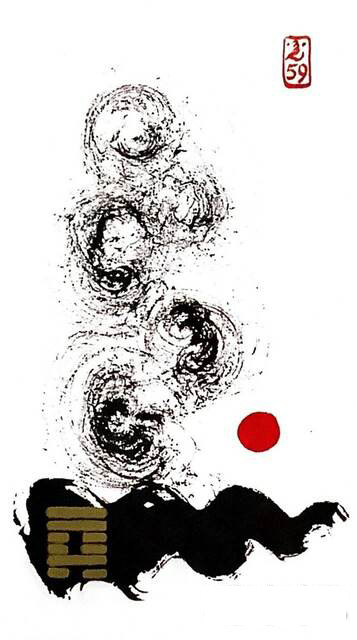

풍수환
평괘 29
풍 / 수 -> 물위에 바람 또는 나무(돛단배), 물보라)
물 위에 바람이 부니 파란이 일어난다물 위에 바람이 불어 물결이 사방으로 흩어지는 상황을 표현한 그림흩어지고 풀린다.전환점.새로운 활력
흩어짐.분산.정리.순환.불안.분주.부서해체.산만.
연애운
서로 마음이 흩어짐.일이 바빠서 만날 시간 부족함
사업운
정리해야 할 문제가 있음.정착 못함.변화.변동
속마음
썸갈팡질팡하는 마음.간 보는 마음
1년 이상거리감이 느껴지는 마음.흩어진 마음
이별 후예전처럼 될 수 없다고 생각하고 이미 흩어진 마음
솔로연애운
새로운 이성 생길 확률 낮다
건강운
오랜 지병은 좋이진다.치질.위.장.두통 식체 주의